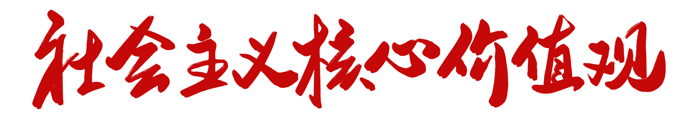
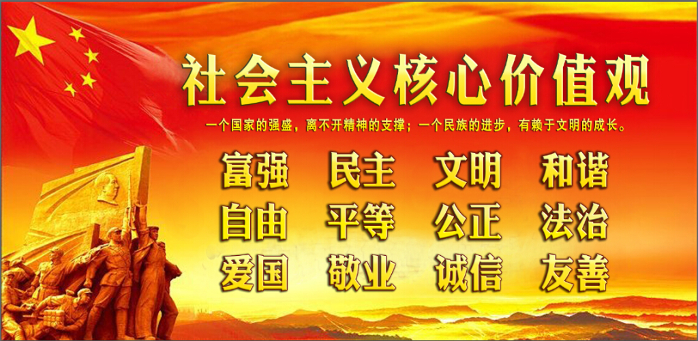
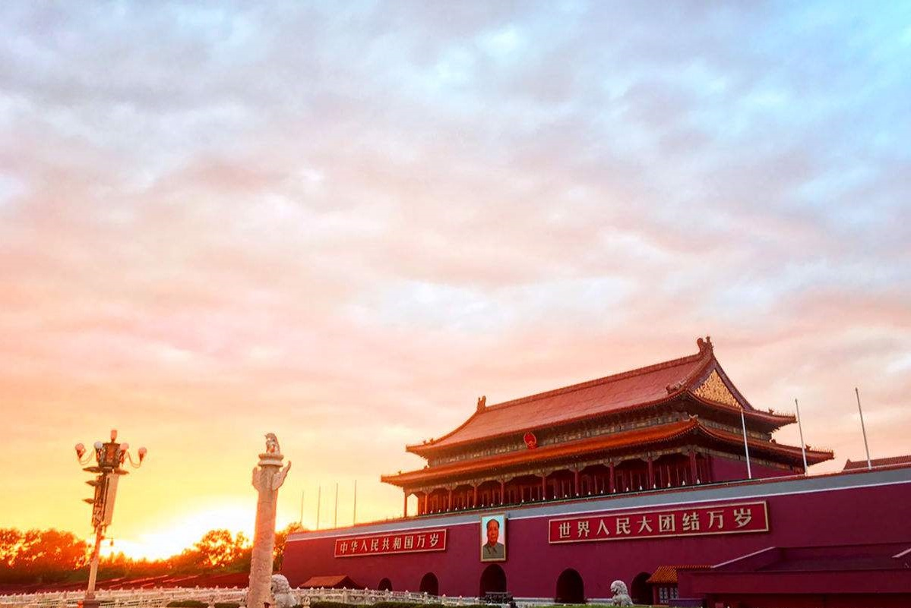

概念内涵
党的十八大提出，倡导富强、民主、文明、和谐，倡导自由、平等、公正、法治，倡导爱国、敬业、诚信、友善，积极培育和践行社会主义核心价值观。富强、民主、文明、和谐是国家层面的价值目标，自由、平等、公正、法治是社会层面的价值取向，爱国、敬业、诚信、友善是公民个人层面的价值准则，这24个字是社会主义核心价值观的基本内容。

“富强、民主、文明、和谐”，是我国社会主义现代化国家的建设目标，也是从价值目标层面对社会主义核心价值观基本理念的凝练，在社会主义核心价值观中居于最高层次，对其他层次的价值理念具有统领作用。
“自由、平等、公正、法治”，是对美好社会的生动表述，也是从社会层面对社会主义核心价值观基本理念的凝练。“爱国、敬业、诚信、友善”，是公民基本道德规范，是从个人行为层面对社会主义核心价值观基本理念的凝练。
基本原则
坚持以人为本，尊重群众主体地位，关注人们利益诉求和价值愿望，促进人的全面发展；坚持以理想信念为核心，抓住世界观、人生观、价值观这个总开关，在全社会牢固树立中国特色社会主义共同理想，着力铸牢人们的精神支柱；坚持联系实际，区分层次和对象，加强分类指导，找准与人们思想的共鸣点、与群众利益的交汇点，做到贴近性、对象化、接地气；坚持改进创新，善于运用群众喜闻乐见的方式，搭建群众便于参与的平台，开辟群众乐于参与的渠道，积极推进理念创新、手段创新和基层工作创新，增强工作的吸引力感染力。

价值意义
面对世界范围思想文化交流交融交锋形势下价值观较量的新态势，面对改革开放和发展社会主义市场经济条件下思想意识多元多样多变的新特点，积极培育和践行社会主义核心价值观，对于巩固马克思主义在意识形态领域的指导地位、巩固全党全国人民团结奋斗的共同思想基础，对于促进人的全面发展、引领社会全面进步，对于集聚全面建成小康社会、实现中华民族伟大复兴中国梦的强大正能量，具有重要现实意义和深远历史意义。
从适应国内国际大局深刻变化看，我国正处在大发展大变革大调整时期，在前所未有的改革、发展和开放进程中，各种价值观念和社会思潮纷繁复杂。面对世界范围思想文化交流交融交锋形势下价值观较量的新态势，面对改革开放和发展社会主义市场经济条件下思想意识多元多样多变的新特点，迫切需要我们积极培育和践行社会主义核心价值观，扩大主流价值观念的影响力，提高国家文化软实力。
从推进国家治理体系和治理能力现代化要求看，培育和弘扬核心价值观，有效整合社会意识，是国家治理体系和治理能力的重要方面。全面深化改革，完善和发展中国特色社会主义制度，推进国家治理体系和治理能力现代化，必须解决好价值体系问题，加快构建充分反映中国特色、民族特性、时代特征的价值体系，在全社会大力培育和弘扬社会主义核心价值观，提高整合社会思想文化和价值观念的能力，掌握价值观念领域的主动权、主导权、话语权，引导人们坚定不移地走中国道路。
从提升民族和人民的精神境界看，核心价值观是精神支柱，是行动向导，对丰富人们的精神世界、建设民族精神家园，具有基础性、决定性作用。一个人、一个民族能不能把握好自己，很大程度上取决于核心价值观的引领。发展起来的当代中国，更加向往美好的精神生活，更加需要强大的价值支撑。要振奋起人们的精气神、增强全民族的精神纽带，必须积极培育和践行社会主义核心价值观，铸就自立于世界民族之林的中国精神。
从实现民族复兴中国梦的宏伟目标看，核心价值观是一个国家的重要稳定器，构建具有强大凝聚力感召力的核心价值观，关系社会和谐稳定，关系国家长治久安。实现“两个一百年”的奋斗目标，实现中华民族伟大复兴的中国梦，必须有广泛的价值共识和共同的价值追求。这就要求我们持续加强社会主义核心价值体系和核心价值观建设，巩固全党全国各族人民团结奋斗的共同思想基础，凝聚起实现中华民族伟大复兴的中国力量。
